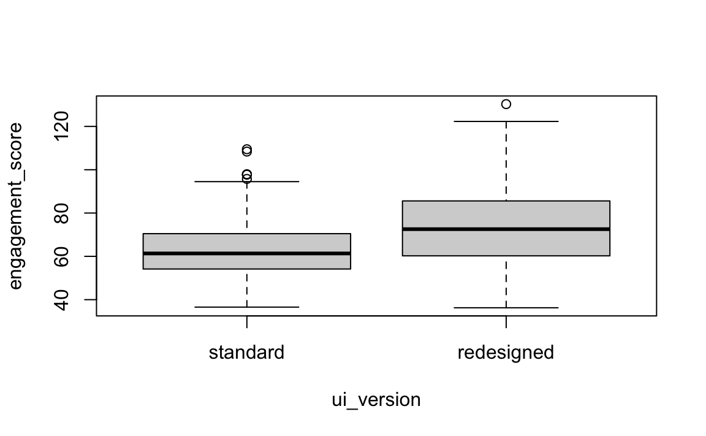
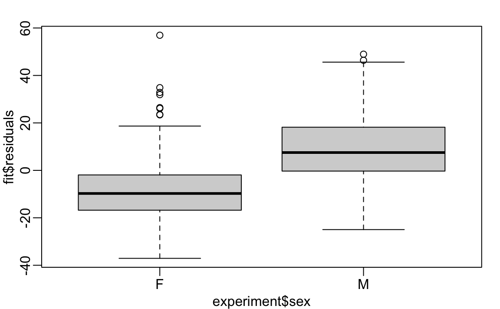
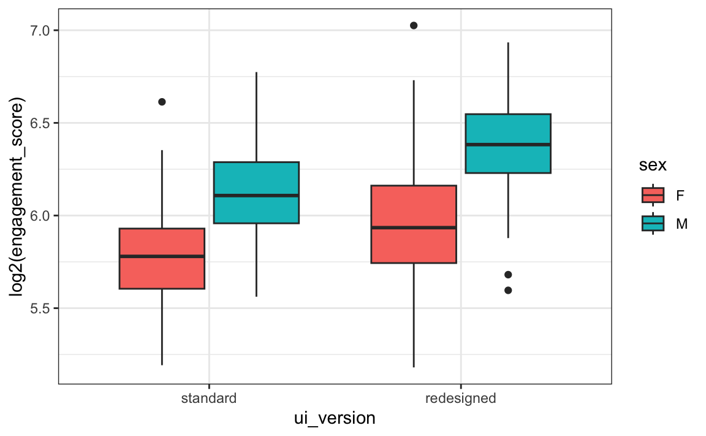
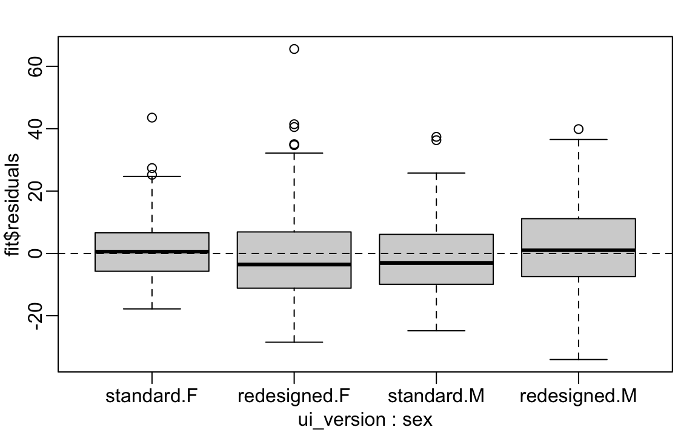

library(behdslabs)
experiment <- app_engagement_experiment |>
mutate(ui_version = relevel(ui_version, ref = "standard"))
table(experiment$ui_version)
#>
#> standard redesigned
#> 394 38627 Treatment Effect Models
Original chapter by Rafael A. Irizarry, from Introduction to Data Science. Adapted by Giorgio Arcara: the datasets are replaced with behavioural ones; new sections Factors with more than two levels, Contrasts and estimated means and Analysis of variance (ANOVA), in place of Irizarry’s on contrasts and ANOVA; some passages are shortened; the text is otherwise Irizarry’s. Details in the CHANGELOG.
Up to now, we have worked with linear models to describe relationships between continuous variables. We motivated these models using the assumption of multivariate normality and showed how the conditional expectation takes a linear form. This covers many common applications of regression.
However, linear models are not limited to describing natural variation among continuous measurements. One of the most important uses of linear models is to quantify the effect of an intervention or treatment. This framework originated in agriculture, where researchers compared crop yields across fields that received different fertilizers or planting strategies. The outcome variable was yield, and the treatment was the fertilizer. The same mathematical ideas now form the basis for analyzing randomized controlled trials in medicine, economics, public health, education, and the social sciences. Modern A/B tests used by internet companies to evaluate website changes or product features also follow this treatment effect framework.
The key idea is that a treatment defines groups, and we use linear models to estimate the difference in outcomes across these groups. In randomized experiments, the comparison is straightforward because randomization helps ensure that the groups are comparable. In observational studies, the goal is the same, but analysts must account for differences between groups that are not due to the treatment itself. For example, if we want to estimate the effect of using a meditation app on sleep quality, we must adjust for factors such as age, sex, or work schedule.
27.1 Case study: a redesigned interface and user engagement
In this chapter, we consider an experiment designed to test for the effects of a redesigned interface on how much people engage with an app. Users were randomly divided into two groups: one group received the redesigned interface, considered the treatment, while the other group served as the control and kept the standard interface. The data is included in the behdslabs package. We make the standard interface the first level of the factor, so that it is the reference group:
A boxplot shows that the users of the redesigned interface are, on average, more engaged.
with(experiment, boxplot(engagement_score ~ ui_version))
However, given that we divided the users randomly, is it possible that the observed difference is simply due to chance? We could answer with a t-test (Chapter 18). In this chapter, we answer with a linear model, which gives the same answer for two groups and extends to designs with more groups and more factors.
27.2 One-factor design
In Section 26.5 we saw that a linear model with a dummy variable compares the averages of two groups, exactly like Student’s t-test. In an experiment, this model has a special interpretation: the coefficient of the dummy variable is the treatment effect. Linear models also permit hypothesis testing in more general situations, in which other variables affect our outcomes.
If we assume that the engagement distributions for users with the standard and the redesigned interfaces are normally distributed, we can write the following linear model to represent the data:
\[ Y_i = \beta_0 + \beta_1 x_i + \varepsilon_i \]
with \(x_i = 1\) if the \(i\)-th user had the redesigned interface, and 0 otherwise, and the errors \(\varepsilon_i\) are independent and again assume a normal distribution with expected value 0 and standard deviation \(\sigma\).
Note that this mathematical formula looks exactly like the model we wrote out for consistency and engagement. However, the fact that \(x_i\) is now 0 or 1 rather than a continuous variable allows us to use it in this different context. In particular, notice that now \(\beta_0\) represents the population average engagement of the users with the standard interface and \(\beta_0 + \beta_1\) represents the population average engagement of the users with the redesigned interface.
A nice feature of this model is that \(\beta_1\) represents the treatment effect of receiving the redesigned interface. The null hypothesis that the redesign has no effect can be quantified as \(\beta_1 = 0\). We estimate \(\beta_1\) and then ask whether it is plausible for the true value to be zero.
So how do we estimate \(\beta_1\) and compute this probability? A powerful characteristic of linear models is that we can estimate the \(\beta\)s and their standard errors with the same LSE machinery:
fit <- lm(engagement_score ~ ui_version, data = experiment)Because ui_version is a factor with two entries, the lm function knows to fit the linear model above with an \(x_i\), an indicator variable. The summary function shows us the resulting estimate, standard error, and p-value:
coefficients(summary(fit))
#> Estimate Std. Error t value Pr(>|t|)
#> (Intercept) 63.1 0.772 81.74 0.00e+00
#> ui_versionredesigned 10.3 1.097 9.36 8.02e-20If we look at the ui_versionredesigned row, the t value computed here is the estimate divided by its estimated standard error: \(\hat{\beta}_1 / \widehat{\mathrm{SE}}[\hat{\beta}_1]\). The Pr(>|t|) is the p-value when testing the null hypothesis that \(\beta_1=0\).
In the case of the simple one-factor model, this is the t-test of Chapter 18. Intuitively, it makes sense, as both \(\hat{\beta}_1\) and the numerator of the t-test are estimates of the treatment effect. The linear model does not assume a different standard deviation for each population. Instead, both populations share \(\mathrm{SD}[\varepsilon]\) as a standard deviation, as in Student’s t-test: t.test(..., var.equal = TRUE) gives exactly the same result, while Welch’s version, the default of t.test, gives a slightly different one.
In the linear model description provided here, we assumed \(\varepsilon\) follows a normal distribution. This assumption permits us to show that the statistics formed by dividing estimates by their estimated standard errors follow a t-distribution, which in turn allows us to estimate p-values or confidence intervals. However, note that we do not need this assumption to compute the expected value and standard error of the least squares estimates. Furthermore, if the number of observations is large enough, then the central limit theorem applies, and we can obtain p-values and confidence intervals even without the normal distribution assumption for the errors.
27.3 Two-factor designs
We are now ready to describe a major advantage of the linear model approach over directly comparing averages.
Note that this experiment included women and men, and in these data men are, on average, more engaged. This explains why the residuals depend on the sex variable:
boxplot(fit$residuals ~ experiment$sex)
This misspecification can have real implications; for instance, if for some reason more men received the redesigned interface (this should not happen with random assignment), then this could explain the increase. Conversely, if fewer received it, we might underestimate the effect of the redesign. Sex could be a confounder, indicating that our model can certainly be improved.
From examining the data:
experiment |> ggplot(aes(ui_version, log2(engagement_score), fill = sex)) +
geom_boxplot()
we see that the effect of the redesign is observed for both sexes and that men are more engaged than women. Although not nearly as obvious, it also appears that the effect of the redesign is stronger in men.
A linear model that permits a different expected value for the following four groups, 1) women with the standard interface, 2) women with the redesigned interface, 3) men with the standard interface, and 4) men with the redesigned interface, can be written like this:
\[ Y_i = \beta_1 x_{i1} + \beta_2 x_{i2} + \beta_3 x_{i3} + \beta_4 x_{i4} + \varepsilon_i \]
with \(x_{i1},\dots,x_{i4}\) indicator variables for each of the four groups. With this representation, we allow the effect of the redesign to be different for women and men.
However, in this representation, none of the \(\beta\) parameters directly correspond to the treatment effect of interest (the effect of the redesigned interface). A useful feature of linear models is that we can reparameterize the model so that the fitted means remain the same, but the coefficients have interpretations aligned with the scientific question.
For example, consider the model
\[ Y_i = \beta_0 + \beta_1 \, x_{i1} + \beta_2 \, x_{i2} + \beta_3 \,x_{i1} x_{i2} + \varepsilon_i\,, \]
where
- \(x_{i1} = 1\) if user \(i\) had the redesigned interface and \(0\) otherwise
- \(x_{i2} = 1\) if user \(i\) is a man and \(0\) if a woman
Then we interpret the parameters as follows:
- \(\beta_0\) is the baseline average engagement of women with the standard interface
- \(\beta_1\) is the effect of the redesign for women
- \(\beta_2\) is the average difference between men and women with the standard interface
- \(\beta_3\) is the difference in the effect of the redesign between men and women, often called an interaction effect
To see why this works, let’s examine plugging in the four options for \(x_{1i}\) and \(x_{2i}\) to the linear combination above and see what we get:
\[ \begin{aligned} \mbox{woman, standard interface} \implies x_{1i} = 0, \,x_{2i} = 0 \implies \mathrm{E}[Y_i] &= \beta_0 \\ \mbox{woman, redesigned interface} \implies x_{1i} = 1, \,x_{2i} = 0 \implies \mathrm{E}[Y_i] &= \beta_0 + \beta_1\\ \mbox{man, standard interface} \implies x_{1i} = 0, \,x_{2i} = 1 \implies \mathrm{E}[Y_i] &= \beta_0 + \beta_2\\ \mbox{man, redesigned interface} \implies x_{1i} = 1, \,x_{2i} = 1 \implies \mathrm{E}[Y_i] &= \beta_0 + \beta_1 + \beta_2 + \beta_3\\ \end{aligned} \]
This parameterization does not change the predicted values. It simply changes how we interpret the coefficients so that each corresponds to a meaningful comparison.
Statistical textbooks describe several other ways in which the model can be rewritten to obtain other types of interpretations. For example, we might want \(\beta_1\) to represent the overall effect of the redesign (the average of the effects for women and men) rather than the effect for women. This is achieved by defining what contrasts we are interested in.
In R, we can specify the linear model above using the following:
fit <- lm(engagement_score ~ ui_version*sex, data = experiment)Here, the * denotes factor crossing, not multiplication: ui_version*sex is shorthand for ui_version+sex+ui_version:sex, to include interface version, sex, and the interface/sex interaction, respectively, in the model.
summary(fit)$coef
#> Estimate Std. Error t value Pr(>|t|)
#> (Intercept) 55.66 0.88 63.27 1.48e-308
#> ui_versionredesigned 7.76 1.25 6.22 8.02e-10
#> sexM 15.06 1.25 12.02 1.27e-30
#> ui_versionredesigned:sexM 5.32 1.78 2.99 2.91e-03Note that the sex effect is larger than the effect of the redesign, and the effect of the redesign is statistically significant for both sexes, with the redesign affecting men more (significant ui_versionredesigned:sexM interaction) with an increased effect between 1.83 and 8.82 points (95% confidence interval for this coefficient).
A common approach applied when more than one factor is thought to affect the measurement is to simply include an additive effect for each factor, like this:
\[ Y_i = \beta_0 + \beta_1 x_{i1} + \beta_2 x_{i2} + \varepsilon_i \]
In this model, the \(\beta_1\) is a general effect of the redesign that applies regardless of sex. In R, we use the following code, employing a + instead of *:
fit <- lm(engagement_score ~ ui_version + sex, data = experiment)Note that this model does not account for the difference in the effect of the redesign between men and women. Diagnostic plots would reveal this deficiency by showing that the residuals are biased: they are, on average, negative for women with the redesigned interface and positive for men with the redesigned interface, rather than being centered around 0.
boxplot(fit$residuals ~ ui_version + sex, data = experiment)
abline(h = 0, lty = 2)
Scientific studies, particularly within epidemiology and social sciences, frequently omit interaction terms from models due to the high number of variables. Adding interactions necessitates numerous parameters, which in extreme cases may prevent the model from fitting. However, leaving interactions out implicitly assumes that they are 0, which can lead to models that do not describe the data well and hence are not suitable for use. Conversely, when we can defend the assumption that there are no interaction effects, models excluding interactions are simpler to interpret, as parameters are typically viewed as the extent to which the outcome increases with the assigned treatment.
Linear models are flexible and widely applicable. The next sections show how lm codes factors with more than two levels, and how to obtain the comparisons we are interested in, the contrasts.
27.4 Factors with more than two levels
In the examples we have examined, each factor had only two groups, or levels: interface version had standard/redesigned, and sex had female/male. However, variables of interest often have more levels. For example, the users in our dataset joined the app in five different cohorts:
table(experiment$cohort)
#>
#> 4 7 8 9 11
#> 97 195 193 97 198A factor with two levels needs one dummy variable (Section 26.5). A factor with \(J\) levels needs \(J - 1\): one for each level except the reference level, which is the first one. With five cohorts, lm creates four dummy variables:
fit <- lm(engagement_score ~ cohort, data = experiment)
head(model.matrix(fit))
#> (Intercept) cohort7 cohort8 cohort9 cohort11
#> 1 1 0 0 0 0
#> 2 1 0 0 0 0
#> 3 1 0 0 0 0
#> 4 1 0 0 0 0
#> 5 1 0 0 0 0
#> 6 1 0 0 0 0
coefficients(fit)
#> (Intercept) cohort7 cohort8 cohort9 cohort11
#> 67.9118 -1.3785 0.0198 0.5439 2.0397The model is
\[ Y_i = \beta_0 + \beta_1 x_{i1} + \beta_2 x_{i2} + \beta_3 x_{i3} + \beta_4 x_{i4} + \varepsilon_i \]
with \(x_{ij} = 1\) if user \(i\) belongs to the \(j\)-th cohort after the reference one, and 0 otherwise. The intercept \(\beta_0\) is the average engagement of the reference cohort (cohort 4), and each other coefficient is the difference between one cohort and the reference cohort. Why not five dummy variables, one per cohort? Because together with the intercept they would be redundant: for every user, the five dummies would add up to 1, the value of the intercept column, and the model would have more parameters than group averages to estimate them from (see the callout at the end of the next section).
27.5 Contrasts and estimated means
The differences between each level and the reference level, which lm reports by default, are one set of contrasts: comparisons between groups. They are not always the comparisons we want. The emmeans package makes it easy to obtain others from the same fitted model. Its first step is to compute the estimated average of each group, with standard errors and confidence intervals:
library(emmeans)
emm <- emmeans(fit, ~ cohort)
emm
#> cohort emmean SE df lower.CL upper.CL
#> 4 67.9 1.64 775 64.7 71.1
#> 7 66.5 1.16 775 64.3 68.8
#> 8 67.9 1.16 775 65.7 70.2
#> 9 68.5 1.64 775 65.2 71.7
#> 11 70.0 1.15 775 67.7 72.2
#>
#> Confidence level used: 0.95In this one-factor model, these are simply the five cohort averages; in models with several factors, they are averages adjusted for the other factors (estimated marginal means).
All pairwise comparisons. If we have no specific hypothesis, we can compare every pair of cohorts. With five levels, that is ten comparisons, so the p-values must be corrected for multiple comparisons (Chapter 20); here we use Holm’s correction:
pairs(emm, adjust = "holm")
#> contrast estimate SE df t.ratio p.value
#> cohort4 - cohort7 1.38 2.00 775 0.687 1.0000
#> cohort4 - cohort8 -0.02 2.01 775 -0.010 1.0000
#> cohort4 - cohort9 -0.54 2.32 775 -0.235 1.0000
#> cohort4 - cohort11 -2.04 2.00 775 -1.020 1.0000
#> cohort7 - cohort8 -1.40 1.64 775 -0.853 1.0000
#> cohort7 - cohort9 -1.92 2.00 775 -0.959 1.0000
#> cohort7 - cohort11 -3.42 1.63 775 -2.099 0.3610
#> cohort8 - cohort9 -0.52 2.01 775 -0.261 1.0000
#> cohort8 - cohort11 -2.02 1.63 775 -1.237 1.0000
#> cohort9 - cohort11 -1.50 2.00 775 -0.748 1.0000
#>
#> P value adjustment: holm method for 10 testsNone of the differences between cohorts is statistically significant.
A planned contrast. If, before looking at the data, we had a specific hypothesis, we can test only that comparison (see Planned contrasts in Chapter 19 and Chapter 20). Suppose that the first cohort, cohort 4, joined the app before an onboarding tutorial was introduced, and we wanted to compare it with the average of the four later cohorts. A contrast is a set of weights, one per group, that add up to zero:
contrast(emm, list("cohort 4 vs later cohorts" = c(1, -1/4, -1/4, -1/4, -1/4)))
#> contrast estimate SE df t.ratio p.value
#> cohort 4 vs later cohorts -0.306 1.76 775 -0.174 0.8620The estimate is the average of cohort 4 minus the average of the four later cohort averages: the data show no difference.
Treatment and sum coding. The default coding of R, in which each coefficient compares a level with the reference level, is called treatment coding. It is convenient in an experiment with a control condition, but other codings exist. A widely used one is sum coding, in which each coefficient compares a level with the overall mean of the levels:
fit_sum <- lm(engagement_score ~ cohort, data = experiment,
contrasts = list(cohort = contr.sum))
coefficients(fit_sum)
#> (Intercept) cohort1 cohort2 cohort3 cohort4
#> 68.157 -0.245 -1.623 -0.225 0.299The intercept is now the average of the five cohort averages, and each coefficient is the difference between one cohort and that overall mean; the coefficient of the last cohort is not shown, because it is minus the sum of the others. The fitted values, and the estimated means given by emmeans, are the same with both codings: the coding changes what the coefficients mean, not the model. Sum coding matters most in models with interactions, as we see in the next section.
Why one dummy variable per level is one too many
Suppose we fit the model \(Y_i = \beta_0 + \beta_1 x_{i1} + \beta_2 x_{i2} + \varepsilon_i\) with \(x_{i1} = 1\) for women and \(x_{i2} = 1\) for men. The means for women and men are \(\beta_0 + \beta_1\) and \(\beta_0 + \beta_2\). The data give us two averages, but there are three unknowns, and an infinite number of values of \(\beta_0, \beta_1, \beta_2\) give the same two means. The model, or its parameters, are then said to be unidentifiable. Each coding solves the problem with one constraint: treatment coding sets the coefficient of the reference level to 0, and sum coding requires the coefficients to add up to 0. Any linear constraint would do, and each gives coefficients with a different interpretation.
27.6 Analysis of variance (ANOVA)
When a factor has more than two levels, we often want to know first whether there is any difference among the levels, rather than a specific difference between two of them. This is the question of the analysis of variance (ANOVA), introduced in Chapter 19 with the afex package. ANOVA is a linear model: the F test of a one-way ANOVA tests the null hypothesis that all the coefficients of the dummy variables are 0, that is, that all the group means are equal. The anova function applied to an lm fit gives the ANOVA table:
anova(fit)
#> Analysis of Variance Table
#>
#> Response: engagement_score
#> Df Sum Sq Mean Sq F value Pr(>F)
#> cohort 4 1176 294 1.13 0.34
#> Residuals 775 201915 260The function aov_ez of afex, used in Chapter 19, gives the same F statistic and p-value. It needs a column that identifies each participant:
library(afex)
experiment <- experiment |> mutate(id = row_number())
aov_ez(id = "id", dv = "engagement_score", data = experiment, between = "cohort")
#> Anova Table (Type 3 tests)
#>
#> Response: engagement_score
#> Effect df MSE F ges p.value
#> 1 cohort 4, 775 260.54 1.13 .006 .342
#> ---
#> Signif. codes: 0 '***' 0.001 '**' 0.01 '*' 0.05 '+' 0.1 ' ' 1This analysis indicates that the effect of cohort is not statistically significant. The same result can be obtained with summary(aov(engagement_score ~ cohort, data = experiment)): aov fits the linear model and prints the ANOVA table.
Multiple factors
ANOVA was developed to analyze agricultural data, which typically included several factors such as fertilizers, blocks of land, and plant breeds. Behavioural experiments often have several factors too. With two factors and their interaction, anova and aov_ez no longer give exactly the same numbers:
anova(lm(engagement_score ~ ui_version * sex, data = experiment))
#> Analysis of Variance Table
#>
#> Response: engagement_score
#> Df Sum Sq Mean Sq F value Pr(>F)
#> ui_version 1 20574 20574 132.94 <2e-16 ***
#> sex 1 61041 61041 394.42 <2e-16 ***
#> ui_version:sex 1 1381 1381 8.92 0.0029 **
#> Residuals 776 120095 155
#> ---
#> Signif. codes: 0 '***' 0.001 '**' 0.01 '*' 0.05 '.' 0.1 ' ' 1
aov_ez(id = "id", dv = "engagement_score", data = experiment,
between = c("ui_version", "sex"))
#> Contrasts set to contr.sum for the following variables: ui_version, sex
#> Anova Table (Type 3 tests)
#>
#> Response: engagement_score
#> Effect df MSE F ges p.value
#> 1 ui_version 1, 776 154.76 136.77 *** .150 <.001
#> 2 sex 1, 776 154.76 395.62 *** .338 <.001
#> 3 ui_version:sex 1, 776 154.76 8.92 ** .011 .003
#> ---
#> Signif. codes: 0 '***' 0.001 '**' 0.01 '*' 0.05 '+' 0.1 ' ' 1The F statistics of the interaction are the same, but those of the two main effects differ slightly. There are two reasons, and they explain the message “Contrasts set to contr.sum” that afex prints:
- Coding. With treatment coding and an interaction in the model, the coefficient of
ui_versionis the effect of the redesign for women, the reference level of sex (see Two-factor designs above). An ANOVA main effect should be the effect averaged over women and men. Sum coding gives this average, which is why afex sets it for every factor. - Unbalanced designs.
anovatests the factors in the order in which they appear in the formula (Type I or sequential sums of squares):ui_versionfirst, thensexafterui_version, then the interaction. afex tests each effect after all the others (Type III sums of squares). When every combination of levels has the same number of participants, a balanced design, the two give the same results. Our design is slightly unbalanced:
table(experiment$ui_version, experiment$sex)
#>
#> F M
#> standard 200 194
#> redesigned 198 188One of the key aspects of ANOVA (Analysis of Variance) is its ability to decompose the total variance in the data into individual contributions attributable to each factor in the study. This decomposition is unique only when the design is balanced. In unbalanced designs, such as our study of app users, the results depend on the order of the factors or on the type of sums of squares, and they require a more cautious interpretation. In psychology, the convention is to report Type III tests with sum coding, as afex does by default.
27.7 Exercises
1. Once you fit a model, the estimate of the standard error \(\sigma\) can be obtained as follows:
fit <- lm(engagement_score ~ ui_version, data = experiment)
summary(fit)$sigmaCompute the estimate of \(\sigma\) using both the model that includes only interface version and a model that accounts for sex. Are the estimates the same? If not, why not?
2. One of the assumptions of the linear model fit by lm is that the standard deviation of the errors \(\varepsilon_i\) is equal for all \(i\). This implies that it does not depend on the expected value. Group the users by their engagement like this:
dat <- experiment
breaks <- with(dat, seq(min(engagement_score), max(engagement_score), 2))
dat <- mutate(dat, group = cut(engagement_score, breaks, include.lowest=TRUE))Compute the average and standard deviation of engagement_score for groups with more than 10 observations and use data exploration to verify if this assumption holds.
3. The dataset also includes a variable indicating in which of two testing batches each user took part (test_batch). Create a boxplot showing engagement by testing batch. Use faceting to make separate plots for each interface and sex combination.
4. Use a linear model to test for a testing-batch effect, taking into account sex and interface version. Use ANOVA to compare the variability explained by testing batch with that of other factors.
5. The app_engagement_experiment data includes two other outcomes: the consistency index and the error rate. Create a boxplot illustrating consistency by sex and interface version. Compare what the visualizations reveal about the effect of the redesign by sex.
6. Fit a linear model and conduct a separate test for the effect of the redesign on consistency for each sex. Note that the effect is statistically significant for women but not for men. Then fit the model to the entire dataset that includes interface version, sex, and their interaction. Notice that the effect of the redesign is significant, yet the interaction effect is not. Explain how this can happen. Hint: To fit a model to the entire dataset with a separate effect for women and men, you can use the formula ~ sex + ui_version:sex
7. Survey panels that measure the same quantity can disagree systematically: each panel may have a bias, for example because of how it recruits respondents. A plot of the survey results can suggest such a bias; here we will give it a more rigorous treatment. The product_launch_forecast dataset records surveys, run by many panels, asking people whether they prefer the new or the current version of a product. We will consider two panels that ran daily national surveys in the last weeks before the launch:
library(behdslabs)
polls <- product_launch_forecast |>
filter(panel %in% c("Panel 136", "Panel 168") &
enddate >= "2016-10-15" &
market == "U.S.") |>
mutate(spread = raw_pref_new/100 - raw_pref_current/100) The spread is the preference for the new version minus the preference for the current one. We want to answer the question: Is there a difference in bias between these two panels? Make a plot showing the spreads for each panel.
8. The data does seem to suggest there is a difference. However, these data are subject to variability. Perhaps the differences we observe are due to chance.
The urn model theory says nothing about the panel effect. Under the urn model, both panels have the same expected value: the true difference in preference in the population at launch, which we call \(\mu\).
Our question “Is there a difference in panel bias?” can be reframed as asking whether the data are consistent with an urn model (i.e., a model with equal panel bias). To answer this, we will model the observed data \(Y_{ij}\) in the following way:
\[ Y_{ij} = \mu + b_i + \varepsilon_{ij} \]
with \(i=1,2\) indexing the two panels, \(b_i\) the bias for panel \(i\), and \(\varepsilon_{ij}\) survey to survey chance variability. We assume the \(\varepsilon\) are independent from each other, have expected value \(0\), and standard deviation \(\sigma_i\) regardless of \(j\).
Which of the following best represents our question?
- Is \(\varepsilon_{ij}\) = 0?
- How close are the \(Y_{ij}\) to \(\mu\)?
- Is \(b_1 \neq b_2\)?
- Are \(b_1 = 0\) and \(b_2 = 0\) ?
9. On the right side of this model, only \(\varepsilon_{ij}\) is a random variable; the other two are constants. What is the expected value of \(Y_{1,j}\)?
10. Suppose we define \(\bar{Y}_1\) as the average of survey results from the first panel, \(Y_{1,1},\dots,Y_{1,N_1}\), where \(N_1\) is the number of surveys conducted by the first panel:
polls |>
filter(panel == "Panel 136") |>
summarize(N_1 = n())What is the expected value \(\bar{Y}_1\)?
11. What is the standard error of \(\bar{Y}_1\) ?
12. Suppose we define \(\bar{Y}_2\) as the average of survey results from the second panel, \(Y_{2,1},\dots,Y_{2,N_2}\), where \(N_2\) is the number of surveys conducted by the second panel. What is the expected value \(\bar{Y}_2\)?
13. What is the standard error of \(\bar{Y}_2\) ?
14. Using what we learned by answering the questions above, what is the expected value of \(\bar{Y}_{2} - \bar{Y}_1\)?
15. Using what we learned by answering the questions above, what is the standard error of \(\bar{Y}_{2} - \bar{Y}_1\)?
16. The answer to the question above depends on \(\sigma_1\) and \(\sigma_2\), which we don’t know. We learned that we can estimate these with the sample standard deviation. Write code that computes these two estimates.
17. What does the CLT tell us about the distribution of \(\bar{Y}_2 - \bar{Y}_1\)?
- Nothing because this is not the average of a sample.
- Because the \(Y_{ij}\) are approximately normal, so are the averages.
- Note that \(\bar{Y}_2\) and \(\bar{Y}_1\) are sample averages, so if we assume \(N_2\) and \(N_1\) are large enough, each is approximately normal. The difference of normally distributed variables is also normally distributed.
- The data are not 0 or 1, so CLT does not apply.
18. We have constructed a random variable that has an expected value of \(b_2 - b_1\), representing the difference in panel bias. If our model holds, then this random variable has an approximately normal distribution, and we know its standard error. The standard error depends on \(\sigma_1\) and \(\sigma_2\), but we can plug the sample standard deviations we computed above. We began by asking: is \(b_2 - b_1\) different from 0? Using all the information we have gathered above, construct a 95% confidence interval for the difference \(b_2 - b_1\).
19. The confidence interval tells us there is a relatively strong panel effect resulting in a difference of about 5%. Random variability does not seem to explain it. We can compute a p-value to indicate that chance does not explain it. What is the p-value?
20. The statistic formed by dividing our estimate of \(b_2-b_1\) by its estimated standard error is the t-statistic:
\[ \frac{\bar{Y}_2 - \bar{Y}_1}{\sqrt{s_2^2/N_2 + s_1^2/N_1}} \]
Now notice that we have more than two panels. We can also test for the panel effect using all panels, not just two. The idea is to compare the variability across panels to the variability within panels.
For this exercise, create a new table:
polls <- product_launch_forecast |>
filter(enddate >= "2016-10-15" &
market == "U.S.") |>
group_by(panel) |>
filter(n() >= 5) |>
mutate(spread = raw_pref_new/100 - raw_pref_current/100) |>
ungroup()Compute the average and standard deviation for each panel and examine the variability across the averages. Compare this to the variability within the panels, summarized by the standard deviation.